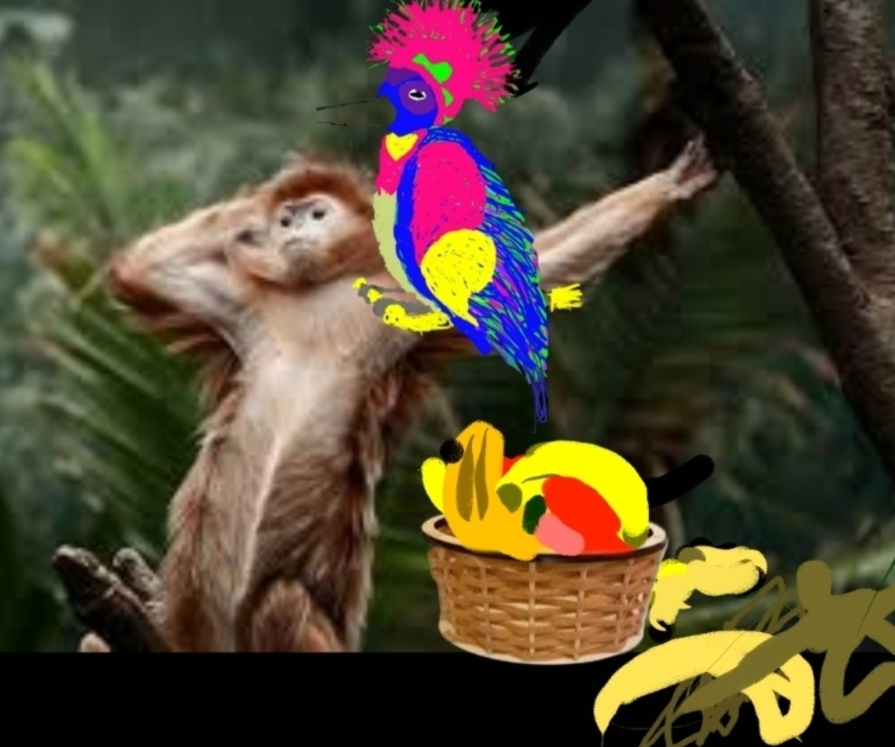

Once upon a time, There was Frank
Frank had two siblings: Roy, and fran,
His sister Crazy
And the patriarch the reason the others are f-n nuts
Franks trip to the zoo!
This story is based on real drawings, real and realcraziness, by Aunt13psychotic.